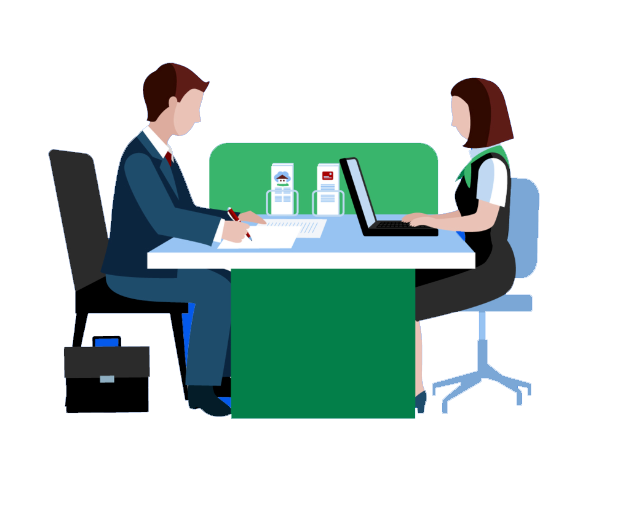

บทที่ 3: การเตรียมตัวสัมภาษณ์งาน
การสัมภาษณ์งานเป็นขั้นตอนสำคัญที่ต้องเตรียมตัวอย่างดี บทนี้จะครอบคลุมคำถามที่พบบ่อย วิธีตอบอย่างมั่นใจ และการใช้ภาษากายที่เหมาะสม

เคล็ดลับสำหรับการสัมภาษณ์งาน
- Research: ศึกษาข้อมูลบริษัทและตำแหน่งงานที่สมัคร
- Practice: ฝึกตอบคำถามสัมภาษณ์ เช่น "Tell me about yourself"
- Professionalism: แต่งตัวให้เหมาะสมและมีความมั่นใจ
- Follow-up: ส่งอีเมลขอบคุณหลังสัมภาษณ์
คำถามสัมภาษณ์ยอดนิยม
1. Can you tell me about yourself?
2. Why are you interested in this position?
3. What are your strengths and weaknesses?
4. Where do you see yourself in 5 years?